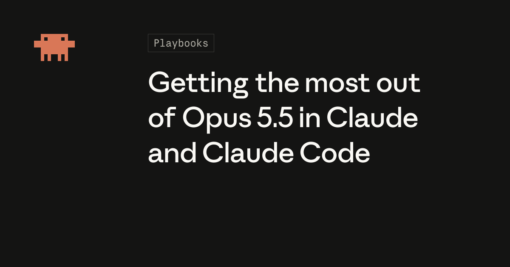
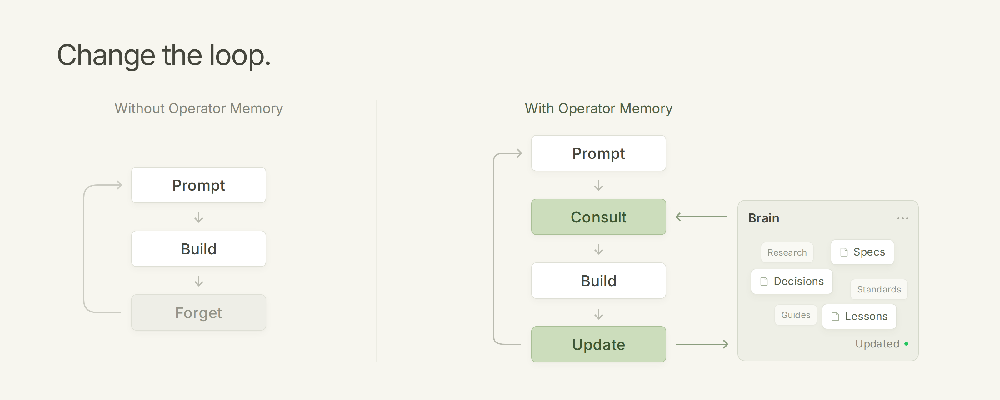

AI Intelligence Daily · 2026-10-04
agent.spawn）与 Pi v1.0.1 GitHub Release 面闭合，叠加社区「Skill/Harness + 文档即记忆」热议——国内一线 Desktop 全静默、无新正式发船。
专栏一｜新闻
1. Claude Code 2.1.288→2.1.289（teammate agent.spawn / agent id 统一 / 大量修复）
事实
@anthropic-ai/claude-code latest=next=2.1.289（npm ≈04:12 CST Oct4；GH ≈07:07 CST）；stable 仍 2.1.285。要点：Added agent.spawn for teammates；plugin hooks 统一 agent id；$.agent.list() idle/waiting；大量 mods/plugin/Bash deny·ask/sandbox 修复；VSCode 回退 2.1.288 auth 变更。
判断
一线 Work Agent 连续补丁 + 多 agent teammate API → 强 A/A UPDATE；注意 stable 未翻。
2. Pi GH Release v1.0.1（Release 面闭合 · MCP CIMD / project overrides）
事实
npm 1.0.1@12:35Z（Oct3 SILENT 已见）；本窗 GH Release v1.0.1@16:14Z（≈00:14 CST Oct4）从 404→200。Nix flake；.pi/mcp.json project overrides；MCP OAuth CIMD；tool renderers。
判断
发船面闭合 + MCP 配置面 → B UPDATE absorb；勿写成第二次 NEW 大版本发船。
专栏二｜话题热议
1. HN：Getting the most out of Opus 5.5 in Claude and Claude Code
事实
HN id=49946567（≈149p / 105c @18:29Z）指向 claude.dev Opus 5.5 playbook。原文 published_time≈2026-09-22 → 社区热议复活，不作官方 overnight NEW。
判断
模型 × Coding Agent 用法高热 → B+/A- heat；与 CC 2.1.289 补丁波对照阅读。

2. Agents don't need memory, they need documentation
事实
HN id=49945933（28p / 20c @17:03Z）；博文 dated Oct 3, 2026。论点：文档工作区 > RAG memory 插件；Operator Memory OSS。
判断
Memory vs docs/context 设计辩论 → B+；旁证，非官方规范。

3. GitHub Trending：Agent-Reach / skills / harness 集群
事实
可核验 stars_today：Agent-Reach 1696 · ponytail 1281 · ECC 897 · mattpocock/skills 751 · impeccable 699 · superpowers 577 · caveman 507 · pi 408 · context-mode 256 · addyosmani/agent-skills 252。
判断
生态风向集群 → B；不升单条发船主新闻。
专栏三｜开源雷达
1. anthropics/claude-code · v2.1.289 ★≈149219
agent.spawn；统一 agent id；$.agent.list() idle/waiting。见新闻条。stable 仍 2.1.285。
2. earendil-works/pi · v1.0.1 ★≈112154
Nix flake；.pi/mcp.json；MCP OAuth CIMD；tool renderers。见新闻条。
3. Magnitude 0.2.5 · Trending · Pins 持平
Magnitude CLI 0.2.5★≈6329 absorb alone。Trending Agent-Reach / skills 集群见话题 #3。Pins：openrig 仍 v0.6.4 tip→0fe2cc · OpenShell 仍 v0.1.2 tip→71c3cd · paperclip canary.9≠stable · orca 仍 v1.4.219 tip→92965f · hindsight / minimax-code 0.6.2 / MCP 2026-07-28。
重点事件新进展
- Claude Code：2.1.288→2.1.289；stable 仍 2.1.285 → 强 A/A UPDATE。
- Pi：npm 1.0.1（昨 SILENT）→ 本窗 GH Release v1.0.1 补挂 → B UPDATE absorb。
- Magnitude CLI：0.2.4→0.2.5 → absorb alone（非一线）。
- Copilot / openrig 0.6.4 / Manus 2.0.3 / MiniMax / JB Air：无更高实质 shipping。
- OpenShell：仍 v0.1.2；tip→71c3cd —— 不升格 release。
- openrig / orca：仍 v0.6.4 / v1.4.219；tip-only。
- paperclip：canary.9 ≠stable；OpenAI LBD 0 items。
- 未变钉：Cursor Sep23 · MCP 2026-07-28 · 小艺 0.7.3 · DeepSeek rc.2（alpha hold）· Qoder Flash TBD · Copilot Default Enablement→Oct 22。
今天正在形成的趋势
- 一线 Coding Agent 连续补丁波（Claude 2.1.289 teammate API）。
- 发船面「npm 先、Release 后」闭合（Pi 1.0.1）。
- 社区从「SaaS=harness」延伸到「文档即记忆」+ Skill 集群。
- 国内一线 Desktop 静默日；促销窗持平。
- 多 agent / MCP 配置面细化（CIMD、project overrides、统一 agent id）。
对智能体互联网
- Claude
agent.spawn+ 统一 agent id——多 agent 委托身份与入口。 - Pi MCP CIMD + project overrides——项目级工具/凭证注册。
- 「文档工作区 > RAG memory」辩论——Memory 选型反共识旁证。
对 Work / Agent 引擎
- Claude 2.1.289：
agent.spawn/ idle-waiting list / Bash deny·ask / sandbox 清单。 - Pi 1.0.1：tool renderers + project MCP overrides。
- Trending skills/harness 集群：可插拔工程技能的注意力密度（观察）。
值得继续跟踪
- Claude stable 翻牌 ·
agent.spawn生态 · Pi >1.0.1 / CIMD - Magnitude >0.2.5 · openrig >0.6.4 · OpenShell >0.1.2
- CCR API / Computer Use · Manus >2.0.3 · MiniMax Desktop >3.1.0 · Air EAP→稳定
- paperclip canary→stable · orca >v1.4.219 · DeepSeek alpha→latest
- Qoder Flash 结束日 · Copilot Default Enablement→Oct 22 · Cursor Sep23 · MCP 2026-07-28
未来信号
补丁波与「配置面闭合」并行：Claude 把 teammate 收成 agent.spawn，Pi 把 npm 已发的 1.0.1 补上 GH Release 与 MCP CIMD——差距越来越不像谁先喊 1.0，而像谁能在连续小版本里同时打开多 agent 入口、收紧权限面、并把 MCP/Skill 做成可项目化契约。社区「文档即记忆」与 skills 集群，则在 Memory 叙事之外另开一条注意力主线。
价格 / 订阅雷达
Qoder Flash 续免（结束日 TBD）。MiniMax Flash-Preview promo 仍约 10/1–10/7。今日未见其他可核实的重要全站新调价。
信源与方法
P0+P1 国内外官网/changelog/RSS/yml/gh/npm；X credits≈$0 跳过检索。配图仅原文真实图（claude.dev og / docs-not-memory loop）。完整 MD：reports/2026-10-04.md · 扫描 /workspace/daily-2026-10-04-*.md。